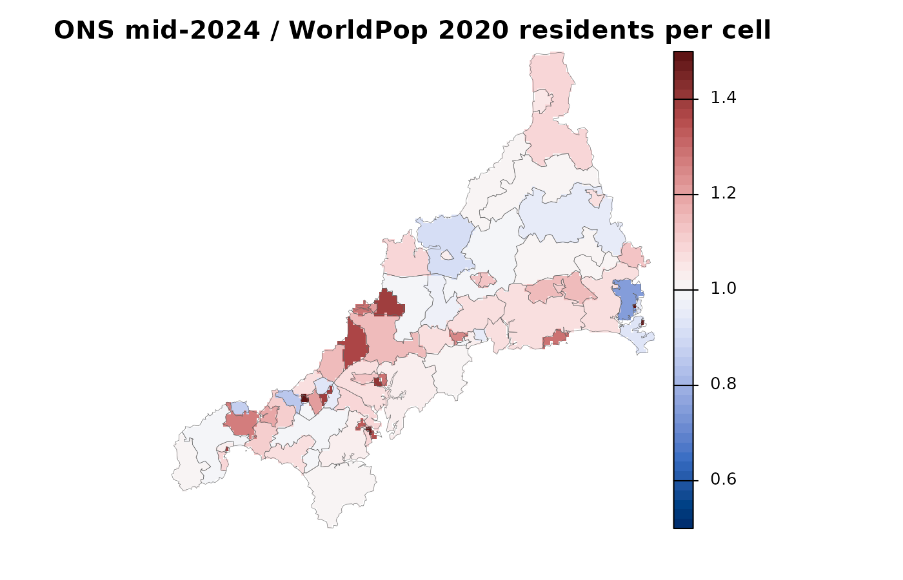

Preparing your own data: counts, facility IDs and travel
Source:vignettes/data-prep.Rmd
data-prep.RmdThis guide uses the bundled Cornwall GP data, described in The Cornwall GP example data.
Every FCA or allocation analysis needs three aligned inputs: demand counts at origins, supply at facilities, and travel between them. This guide prepares them from the Cornwall data and shows three problems you are likely to meet with your own data: facility IDs that must match, unknown travel times, and demand that arrives as small-area totals rather than a grid.
# WorldPop 2020 residents per cell
pop <- read_spax_example("cornwall_pop.tif")
# Travel minutes, one layer per practice
travel <- read_spax_example("cornwall_gp_travel.tif")
gp <- st_drop_geometry(cornwall_gp)
c(
practices = nrow(gp),
travel_layers = nlyr(travel),
small_areas = nrow(cornwall_lsoa)
) practices travel_layers small_areas
55 55 337 Match facilities by ID, not by order
Each travel layer is named with the practice’s NHS code, the same
code as cornwall_gp$practice. Check that the two sets agree
before any calculation.
# Practice codes must be unique and match the travel layer names
stopifnot(
!anyDuplicated(gp$practice),
setequal(names(travel), gp$practice)
)
head(names(travel))[1] "L82001" "L82003" "L82004" "L82006" "L82007" "L82008"When supply is a data frame, spax_e2sfca(),
spax_2sfca(), spax_3sfca() and
spax_huff2sfca() match its rows to the travel layers
through id_col, so the row order does not matter.
# The E2SFCA surface for a given supply table
fit <- function(supply) {
result <- spax_e2sfca(
demand = pop,
supply = supply,
distance = travel,
decay_params = list(method = "gaussian", sigma = 10),
id_col = "practice",
supply_cols = "gp_fte_extg"
)
result$accessibility
}
# Reversing the row order gives the same surface
shuffled <- arrange(gp, desc(practice))
all.equal(values(fit(gp)), values(fit(shuffled)))[1] TRUEA named supply vector is also matched by name, but an unnamed vector or a matrix is used in layer order: then keeping the order right is your job. The number of supply rows must equal the number of travel layers. Dropping a facility from one input and not the other stops with an error:
# 54 travel layers, but 55 rows of supply
mainland_layers <- travel[[gp$practice[!gp$scilly]]]
tryCatch(
spax_e2sfca(
demand = pop,
supply = gp,
distance = mainland_layers,
decay_params = list(method = "gaussian", sigma = 10),
id_col = "practice",
supply_cols = "gp_fte_extg"
),
error = function(e) conditionMessage(e)
)[1] "Length of distance layers (54) must match length of facilities (55)"Decide what unknown travel means
Travel is NA where a cell is unpopulated, where there is
no road connection and for journeys over 180 minutes. In Cornwall the
gaps come from the Isles of Scilly: their practice cannot be reached by
road from the mainland, mainland practices cannot be reached from the
islands, and some cells on the smaller islands reach no practice at
all.
# Count the cells with unknown travel in each practice's layer
missing_cells <- global(is.na(travel), "sum")[[1]]
table(scilly_practice = gp$scilly, missing_cells) missing_cells
scilly_practice 28860 35750
FALSE 54 0
TRUE 0 1
# Cells with a road route to the Scilly practice (L82017) or to the
# mainland (here the first layer, a mainland practice)
road_scilly <- !is.na(values(travel[["L82017"]], mat = FALSE))
road_mainland <- !is.na(values(travel[[1]], mat = FALSE))
# Residents in each group
residents <- values(pop, mat = FALSE)
round(c(
to_mainland = sum(residents[road_mainland]),
to_scilly_practice = sum(residents[road_scilly]),
no_road_link = sum(residents[!road_mainland & !road_scilly], na.rm = TRUE)
)) to_mainland to_scilly_practice no_road_link
541184 1206 277 The FCA functions drop unknown weights from their sums
(gather_weighted() defaults to na.rm = TRUE),
so an NA travel time acts like “no access”. Run on all 55
practices, the islands become a separate system with one practice and
few residents, so their index is far above the mainland’s. The residents
with no route drop out of that practice’s demand and get no index at
all.
# Index per 1,000 residents with all 55 practices
with_scilly <- 1000 * values(fit(gp), mat = FALSE)
round(
c(
mainland_median = median(with_scilly[road_mainland]),
scilly_median = median(with_scilly[road_scilly])
),
2
)mainland_median scilly_median
0.49 7.59 The islands do have access, by boat and air, which the road-based travel times do not represent. Rather than read these numbers as access, the FCA guides model mainland Cornwall only: the 54 mainland practices and the cells with a travel time to every one of them.
# Mainland practices and their travel layers
gp <- filter(gp, !scilly)
travel <- travel[[gp$practice]]
# Keep cells with complete travel, then trim the empty margin
pop_mainland <- trim(mask(pop, sum(travel)))
travel <- crop(travel, pop_mainland)
# Same grid, same practice order, and no populated cell with unknown travel
stopifnot(
compareGeom(pop_mainland, travel),
identical(names(travel), gp$practice),
!anyNA(values(travel)[!is.na(values(pop_mainland)), ])
)
round(global(pop_mainland, "sum", na.rm = TRUE)[[1]])[1] 541184sum(travel) is NA wherever any layer is
NA, so the mask keeps exactly the cells with complete
travel. The check confirms that no populated cell has unknown travel
left.
Turn small-area counts into a demand grid
Demand often comes as totals for administrative areas.
cornwall_lsoa holds ONS mid-2024 population estimates for
the 337 small areas (LSOAs). To use them on the grid, each area’s total
must be spread over its cells. Spreading it uniformly would ignore where
people live inside the area, so we use the WorldPop grid as a pattern:
transform_pmf() turns it into shares that sum to 1, and
transform_demand() rescales those shares so that each area
keeps its own total.
# Mainland small areas as a terra vector in the grid's coordinates
areas <- cornwall_lsoa |>
filter(!scilly) |>
st_transform(crs(pop)) |>
vect()
# The WorldPop grid as shares that sum to 1
pattern <- transform_pmf(pop)
# Spread each area's total over its cells; show any warning as a message
lsoa_grid <- withCallingHandlers(
transform_demand(
x = areas,
value_col = "pop",
pmf = pattern,
density = TRUE
),
warning = function(w) {
message("Warning: ", conditionMessage(w))
invokeRestart("muffleWarning")
}
)Warning: 41 area(s) cover no grid cell or have zero weight; their counts are dropped and the surface is rescaled. Use larger areas or a finer template.The grid cells are about 1 km across, and many town LSOAs are smaller than that: an area whose polygon contains no cell centre cannot receive its count, and the function warns rather than silently losing people. The fix is to use larger areas or a finer grid. Here we merge LSOAs into their middle-layer areas (MSOAs): an LSOA name ends in a letter, and dropping it gives the MSOA name.
# Merge LSOAs into MSOAs, adding up their counts
areas$msoa <- sub("[A-Z]$", "", areas$name)
msoa <- aggregate(areas, by = "msoa", fun = "sum")
# Spread each MSOA total over its cells with the WorldPop pattern
ons <- transform_demand(
x = msoa,
value_col = "sum_pop",
pmf = pattern,
density = TRUE,
full_output = TRUE # also return the area totals
)
c(
areas = nrow(msoa),
ons_total = sum(msoa$sum_pop),
grid_total = round(global(ons$surface, "sum", na.rm = TRUE)[[1]])
) areas ons_total grid_total
73 583289 583289
# Largest difference between an area's total and its grid total
signif(max(abs(ons$totals$original - ons$totals$redistributed)), 2)[1] 0.00053All 73 areas keep their totals: the largest error is a fraction of a person. The new grid has the ONS counts with the WorldPop pattern inside each area. The two sources differ in date and method, so the ratio between them varies by area. The map caps the colour scale at 0.5 and 1.5.
# ONS count over WorldPop count in each cell, and its median per area
ratio <- crop(ons$surface / pop, msoa)
by_area <- extract(ratio, msoa, fun = median, na.rm = TRUE)[, 2]
round(summary(by_area), 2) Min. 1st Qu. Median Mean 3rd Qu. Max.
0.74 1.00 1.07 1.15 1.18 3.73
plot(
clamp(ratio, 0.5, 1.5),
axes = FALSE,
range = c(0.5, 1.5),
col = hcl.colors(50, "Blue-Red 3"),
main = "ONS mid-2024 / WorldPop 2020 residents per cell"
)
lines(msoa, lwd = 0.3, col = "grey40")
In most areas the ONS estimate is higher, and in one it is more than three times the WorldPop count. Decide which source matches your question and say which you used; do not mix them within one analysis. The other FCA guides use the WorldPop grid directly.
Two more cautions. If a source raster is a density (people per square
kilometre), multiply it by terra::cellSize() in the same
area unit before use: summing densities does not conserve counts, and
longitude-latitude cells are not all the same size. And
rasterize_demand() does a different job: it reweights a
prior pattern by an area rate and returns shares, not
counts that respect area totals. For example, the share of residents
aged 65 and over:
# Share of residents aged 65 and over in each MSOA
msoa$share_65 <- msoa$sum_pop_65p / msoa$sum_pop
# Reweight the WorldPop pattern by that share; the result is shares
older <- rasterize_demand(
x = msoa,
value_col = "share_65",
prior = pattern
)
older_counts <- older * sum(msoa$sum_pop_65p)
# Each area's grid total as a fraction of its known count
kept <- extract(older_counts, msoa, fun = sum, na.rm = TRUE)[, 2] /
msoa$sum_pop_65p
round(quantile(kept, c(0, 0.5, 1)), 2) 0% 50% 100%
0.29 1.01 1.46 The shape is plausible (population times the local 65+ share), but
area totals are not kept: some areas end up with well under or over
their known count. For counts, use transform_demand().
The same rules for allocation inputs
The experimental allocation workflow takes a numeric
origin-by-facility matrix, cornwall_travel, from small-area
centroids to practices. Its preparation is strict: unknown travel on an
active origin is an error unless you declare a policy.
# Named vectors: registered residents per area, GP FTE per practice
demand <- setNames(cornwall_lsoa$registered, cornwall_lsoa$lsoa)
supply <- setNames(cornwall_gp$gp_fte_extg, cornwall_gp$practice)
tryCatch(
prepare_allocation(
demand = demand,
supply = supply,
distance = cornwall_travel
),
error = function(e) conditionMessage(e)
)[1] "active travel is missing; declare missing_travel = 'legacy_zero' to omit unknown edges"missing_travel = "legacy_zero" would omit unknown pairs,
as the FCA functions do. Positive infinity declares a known absent link.
Neither describes the islands’ boat and air links, so we keep the
mainland, matching IDs by name:
mainland_area <- !cornwall_lsoa$scilly
inputs <- prepare_allocation(
demand = demand[mainland_area],
supply = supply[gp$practice],
distance = cornwall_travel[mainland_area, gp$practice],
# Unit labels are recorded with the inputs, not converted
metadata = list(
demand_units = "registered residents",
supply_units = "GP FTE excluding GPs in training",
travel_units = "minutes"
)
)
class(inputs)[1] "ae_prepared_inputs"The unit declarations are recorded, not converted. See the allocation workflow for what the prepared inputs feed into.
Continue
- Comparing FCA methods: E2SFCA, 2SFCA, M2SFCA, 3SFCA and Huff-2SFCA on these inputs.
- The E2SFCA calculation step by step.
- Grid resolution, support and computational cost.